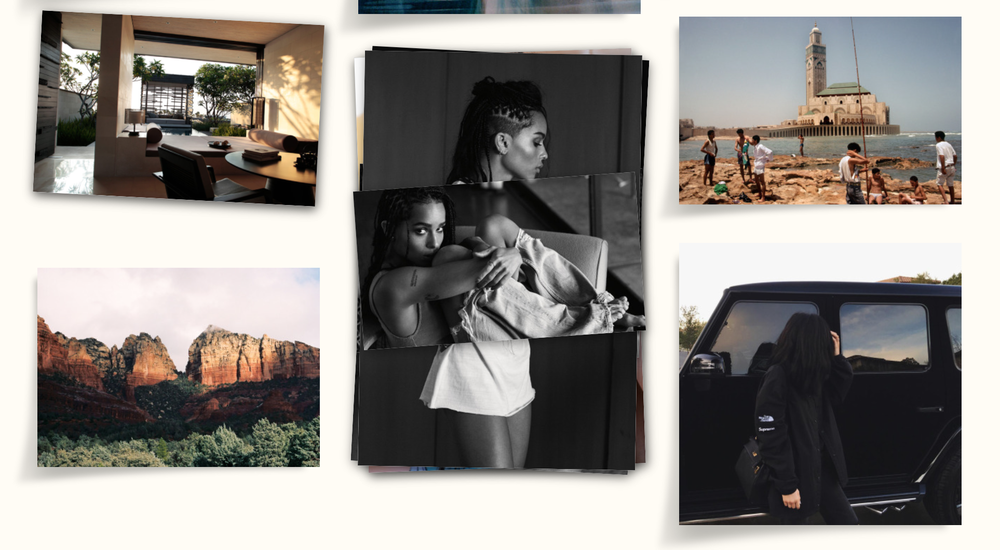
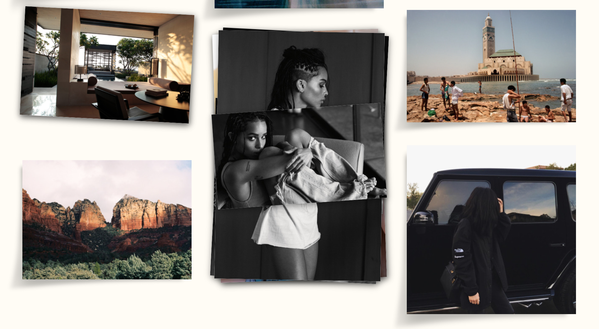

Programmed Projects
Designs
Client Site
Purpose: This is a friend's website for their photography. I didn't have anything to do with the code (I believe he used squarespace) but designed what it should look like in order to accurately reflect his work and personality.

It was meant to be clean & simple, to allow the vibrant colors of his own photography take the attention of the user.
His contact information is available upon request.
Mood Boards
Purpose: These are my own creations (powered by Tumblr) that I like to put together based on color schemes and just overall moods.
 

Through creating boards like these, I get inspirations for potential "feels" of website pages.
Logos
Purpose: The first one is my own logo I created for personal branding. The second is one I worked on for a client. I was given the word "Link" and a picture of the vibe the client was going for. There was little passing back and forth before it was complete!